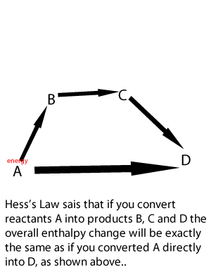

Hess’ Law
Callout
Enthalpy Change and Hess’s Law

From experimental evidence, chemists have found that the change in enthalpy in a chemical process is independent of the path taken. This means that in going from an initial set of reactants to a final set of products, the change in enthalpy is the same regardless of whether the conversion happens in one step or in a series of steps.
Let us consider the reaction in which gaseous nitrogen and oxygen combine to form nitrogen dioxide gas. However, nitrogen dioxide can also be made using a two-step process.
6.png)
Callout
13.png)
Q Graphite and diamond are two forms of solid carbon. Graphite is a soft, black, slippery material that is the substance in pencils that makes marks. Diamond is a hard, crystalline substance used in making jewelry. Use the data below to calculate the enthalpy change for the conversion of graphite to diamond.
Cgraphite (s) Cdiamond (s)
Solution:
Step 1: Use the data in the given figures to write the balanced thermochemical equations for the combustion reactions.
13.png)
Step 2: Rearrange the equations as needed to get the required reactants and products.
In the conversion reaction, graphite is a reactant and diamond is a product. Therefore, reverse the second equation and change the sign of its ΔH.
10.png)
Step 3: Add equations (1) and (3) and their respective enthalpy values to obtain the conversion reaction and the ΔH value.
9.png)